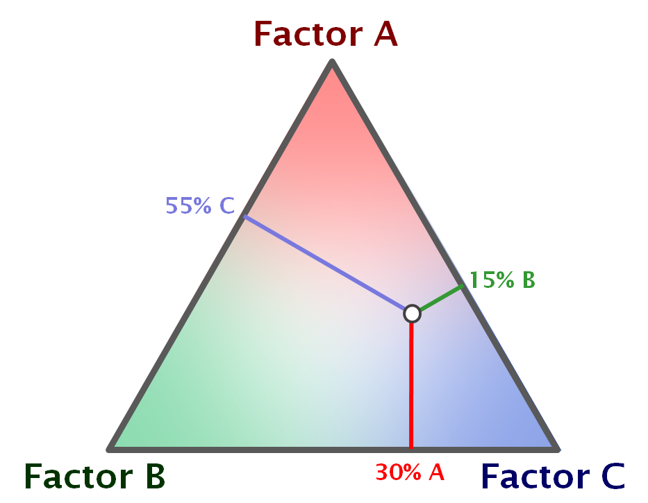
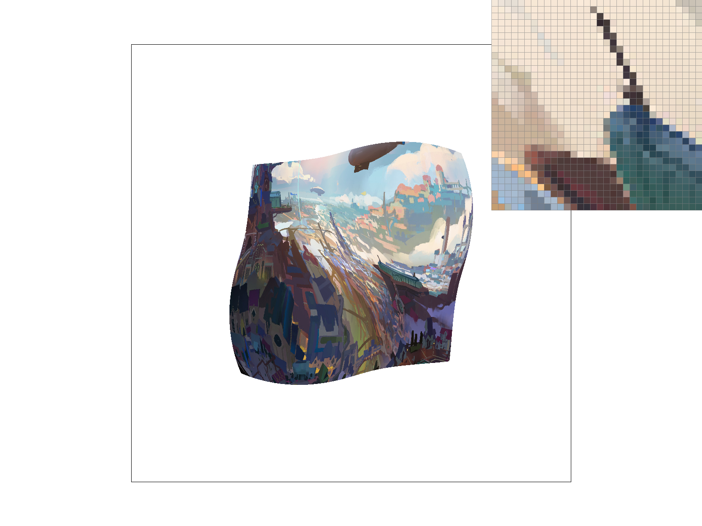

Overview
In this project, I implemented a white variety of graphics concepts in C++. This included basic rasterization with an added supersampling feature, various figure transformations in homogeneous coordinates, barycentric coordinate interpolation, and various sampling techniques and optimizations for texture sampling. The final topic in particular included pixel sampling methods such as nearest neighbor and bilinear interpolation, and various level sampling methods such as nearest level and trilinear color interpolation. I learned a great deal about how graphics are rendered as a whole, as well as how colors are represented. I think what was most satisfying was learning how to debug visual errors - it was really interesting to see that every bug I coded exhibited a pronounced visual effect on the rendered images, and knowing what to fix required a different way of thinking about how those colors were generated.
Section I: Rasterization
Part 1: Rasterizing single-color triangles
1. To rasterize a triangle, we need to know which pixels to illuminate and what color they should illuminate with. To do this efficiently, I calculated the bounding box of the triangle we are trying to rasterize by recording the minimum and maximum x and y values of the triangles vertices. This forms the bounding box of the triangle, which forms an upper bound on the number of pixels I need to check for rasterization. Then, I start in the top left pixel of the bounding box, and for each pixel I check whether it is inside the triangle or not by using the formula in class. Essentially, by calculating the dot product between the pixel and every vector normal to the sides of the triangle and seeing if these are all positive or all negative, I’m able to deduce if the point is in the intersection of the 3 half-planes formed by the triangles edges. If so, I then fill the sample_buffer with the appropriate color passed in.
2. My algorithm is not any worse than one which checks each sample within the bounding box of a triangle. In actuality, it is the algorithm which does exactly that. There is no additional overhead calculation; my algorithm simply brute force checks every point in the bounding box.
3. Some aliasing is happening on this red triangle!

Part 2: Antialiasing triangles
1. I had a very similar approach to task 1. Once again, I calculated the bounding box of a triangle, but then I looped through every ‘mini-pixel’ of the bounding box and checked if they were inside the triangle with the same formula. The mini-pixel’s coordinates were calculated by dividing the step size by the sample rate’s square root, and using that step size to iterate through the bounding box. If a mini-pixel was inside the triangle, then it’s position in the sample buffer was filled with the input color.
After the sample buffer was fully rendered, I downsampled it to generate the final frame buffer to be displayed. This was done by breaking down the sample-buffer into squares with side length sqrt(sample_rate), and for every mini-pixel in that square, we averaged the colors to calculate a final color to be rendered on the frame buffer location corresponding to the square of mini-pixels.
Supersampling is extremely useful in anti-aliasing. Aliasing occurs when there are very high frequencies or changes in color along the borders of a figure or wherever in general. To the human eye, pixels stick out, look rough, and are called ‘jaggies’. To combat this and generate more appealing images, we smooth out these boundaries by adjusting the intensity of a color on these high-frequency borders by averaging them out. Supersampling does this averaging of the color by calculating the proportion of ‘mini-pixels’ inside the triangle.
To modify the rasterization pipeline to do this, I simply added another double for-loop to sample all the mini-pixels in a larger pixel. This way, I was able to count the number of mini-pixels and calculate a proportion to base my weighted average on. By doing these averages for every pixel I was sampling, I was able to smooth out borders of high frequencies and thus, anti-alias my triangles.
2. basic/test4.svg is pictured below:
|
|

|
|
|
We can see that as the sample-rate increases, these ‘jaggies’ on the sharp corner of this red triangle are mellowed out. What’s happening is that these borders where there is a drastic change in color are smoothed out by a weighted average calculated from the proportion of “mini-pixels” inside the triangle. As this averaging helps the color transition less drastically, an anti-aliasing effect emerges and the overall image quality appears less rough but more crisp.
Part 3: Transforms
1. In the following picture of cubeman, I tried to turn him into Cam Newton doing the dab!
Section II: Sampling
Part 4: Barycentric coordinates
1. Barycentric coordinates are a way to describe a point’s location relative to the points which form an enclosing triangle on it. A more physics-based explanation is let’s say you wanted to balance a triangle on a point. Barycentric coordinates are a way to assign weight to the triangle’s vertices so that you can balance the triangle perfectly.
2. svg/basic/test7.svg
Part 5: "Pixel sampling" for texture mapping
1. Pixel sampling is a way to calculate the color of a point by using the colors around it (similar to barycentric coordinates, where we describe a point’s location based on its triangulating neighbors).
To implement texture mapping, when we translate a pixel’s location from screen space to texture space, we need to know what texture color corresponds to that texture space location! In order to do this, I implemented nearest pixel sampling and bilinear pixel sampling. Nearest pixel sampling simply colors the pixel the same color as its nearest lattice point in texture space, while bilinear pixel sampling colors the pixel as a weighted average of the 4 lattice points which enclose its location in texture space.
2. Here are the results of task 5:
|
|
|
|
|
|
3. Here we can see bilinear sampling clearly outperforming nearest sampling. In the nearest sampling image, there is so much aliasing present that it is very difficult to read the word “Berkeley” on our university’s seal under the texture map. Many colors are either completely white or blue, making it difficult to read and overall many jaggies in the wording. However, under the bilinear sampling, the letters become much more smooth and you can tell that it is in English! In fact, people who are even semi-familiar with the UC Berkeley seal will still be able to make out the letters and read the “B”, “E”, and “R”.
The main relative difference is that nearest sampling can sometimes be more blocky, rougher, and in general not as smooth as bilinear sampling. There can be a large difference between the two if there is great positional difference error accumulated when taking the nearest neighbor. Bilinear sampling is able to tone down this positional difference error when averaging out the 4 corners, but nearest pixel sampling doesn’t and can suffer greatly as a result, especially along non-aligned axes in texture space.
Part 6: "Level sampling" with mipmaps for texture mapping
1.Level sampling is a method to improve clarity, speed, anti-aliasing, and general image quality in texture mapping by precomputing lower and lower resolutions of a texture to help map textures onto figures, especially in unique perspectives.
I implemented level sampling in texture mapping by first using the formula from class to calculate the correct level. This is essentially a Jacobian constant, which tells us the determinant of the transformation from screen space to texture space. From there, we sampled the colors of the texture of the specific resolution with the input pixel sampling method at the calculated level. If the input was level zero, I simply pixel sampled at the first texture level (which has full resolution). If the input was nearest level, I rounded the calculated level and sampled there; finally if the input was bilinear, I calculated the pixel color sampled at the above and below level, and performed a weighted averaged based on how much closer it was to the higher/lower level.
2. Nearest pixel sampling is much faster than bilinear pixel sampling because we can simply grab the nearest pixel with a round, while in bilinear we have to perform some computation to calculate the weighted averages of the lattice point colors enclosing our pixel. Thus, bilinear also requires more memory, but it has much greater antialiasing power for the reasons described above in task 5.
L-zero sampling is very detailed, memory efficient, and . L-nearest and L-bilinear require much more memory because we have to precompute the lower resolution texture images. Similarly, it is also slower and more computationally intensive because for L_nearest, we have to compute the lower resolution texture. For L-bilinear, we need two samples from the above level and below level, and do additional computation to compute the average. However, because of this averaging, they can smooth out color boundaries that are very drastic in change, which means they exhibit more anti-aliasing properties than L-zero.
3. Here are images for task 6
|

|
|
|
|
|
Section III: Art Competition
If you are not participating in the optional art competition, don't worry about this section!